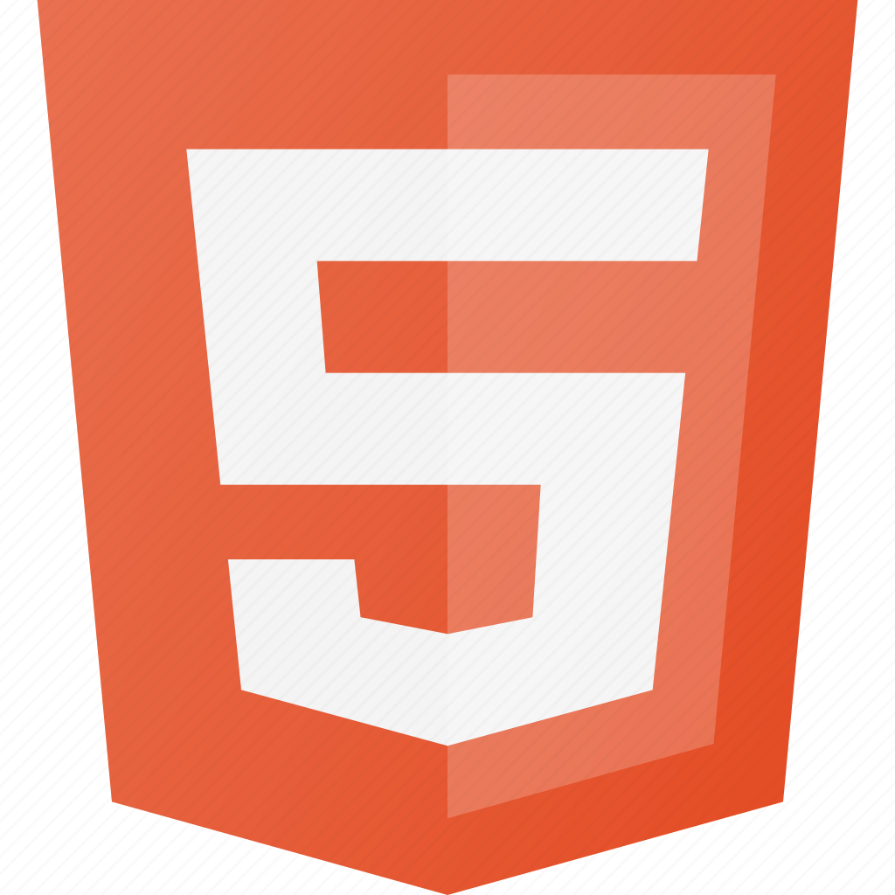
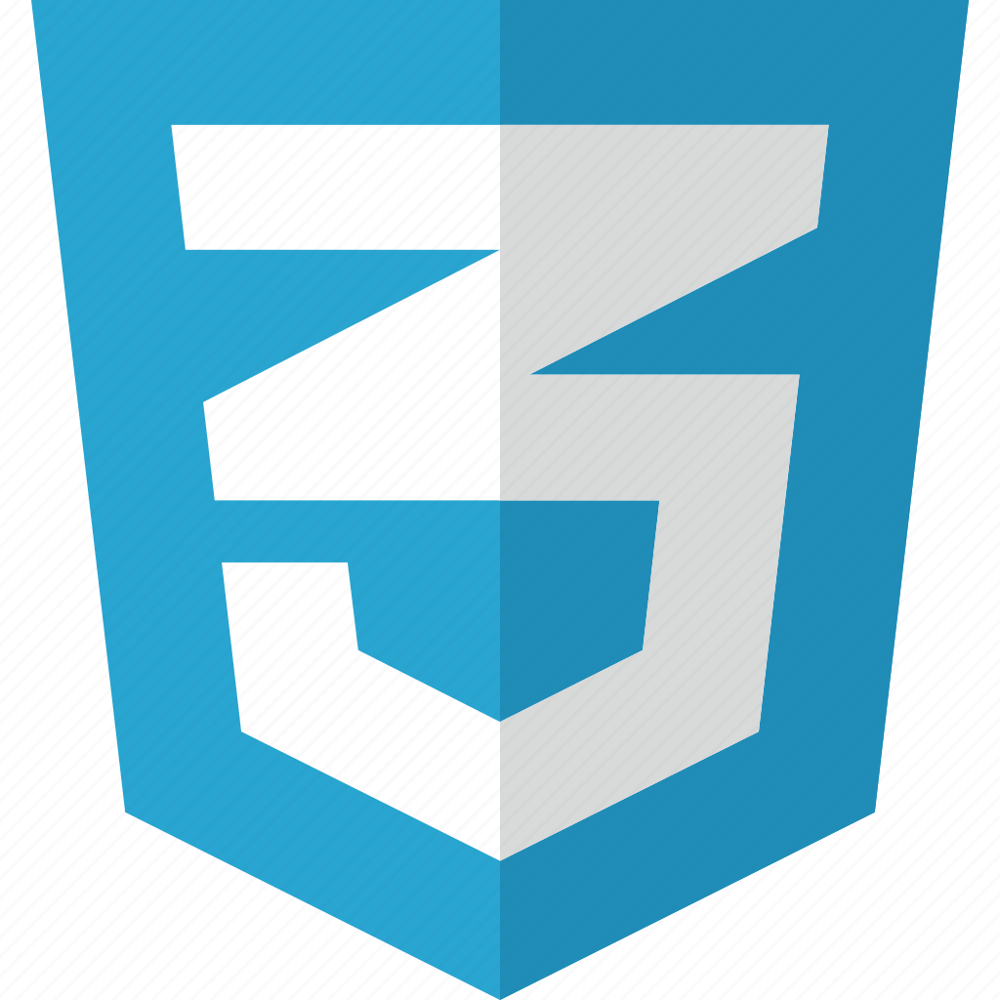

HTML
HTML (HyperText Markup Language) é uma linguagem de marcação utilizada no desenvolvimento de páginas web, sendo responsável pela estrutura das páginas, o HTML funciona por meio de marcadores que são os comandos de formatação da linguagem, os elementos do HTML são formados pelos marcadores, os atributos que são responsáveis pela modificação dos elementos, e os valores que dão características as modificações dos atributos.

CSS
CSS (Cascading Styles Sheet) é utilizado para aplicar estilos a uma página web, esses estilos podem ser aplicados no próprio documento HTML por meio do marcador style ou adicionando um link de um arquivo CSS. Sua sintaxe é bem simples funcionando por meio de um seletor que serve para identificar em qual elemento o estilo vai ser aplicado, uma declaração que é composta por uma propriedade que é aquilo que vai ser modificado no elemento, e o valor que define a modificação que vai ser feita.

JavaScript
JavaScript é uma linguagem de programação executada dentro do navegador e usada para tornar as páginas da web interativas. Por exemplo, quando um botão é pressionado, uma mensagem pode aparecer na tela.

PHP
PHP (Hypertext Preprocessor) é uma linguagem do lado do servidor usada para criar páginas dinâmicas. Por exemplo, pode gerar informações personalizadas para o usuário quando a página é carregada.